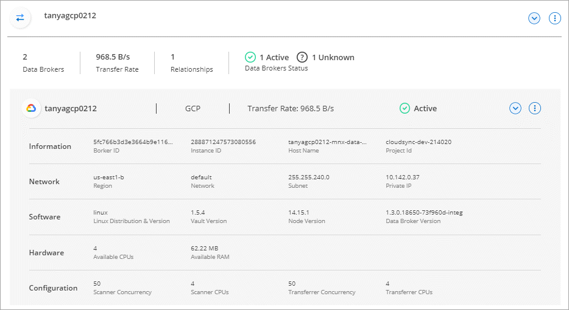

Versionshinweise
Versionshinweise
Managen von Daten-Broker-Gruppen
 Änderungen vorschlagen
Änderungen vorschlagen
- Funktionsweise von Data Broker-Gruppen
- Sicherheitsempfehlungen
- Fügen Sie einer Gruppe einen neuen Datenvermittler hinzu
- Bearbeiten Sie den Namen einer Gruppe
- Einrichten einer Unified-Konfiguration
- Verschieben von Datenmaklern zwischen Gruppen
- Proxy-Konfiguration aktualisieren
- Zeigen Sie die Konfiguration eines Datenmaklers an
- Behebung von Problemen mit einem Daten-Broker
- Entfernen Sie einen Datenmanager aus einer Gruppe
- Löschen einer Datenmaklergruppe
Eine Daten-Broker-Gruppe synchronisiert Daten von einem Quellspeicherort an einem Zielspeicherort. Für jede von Ihnen erstellte Synchronisierungsbeziehung ist mindestens ein Datenvermittler in einer Gruppe erforderlich. Managen Sie Daten-Broker-Gruppen, indem Sie einer Gruppe einen neuen Daten-Broker hinzufügen, Informationen zu Gruppen anzeigen und mehr.
Funktionsweise von Data Broker-Gruppen
Eine Datenmaklergruppe kann einen oder mehrere Datenvermittler enthalten. Das Zusammenführen von Datenmaklern kann zur Verbesserung der Performance von Synchronisierungsbeziehungen beitragen.
Gruppen können mehrere Beziehungen verwalten
Eine Gruppe von Daten-Brokergruppen kann eine oder mehrere Synchronisierungsbeziehungen gleichzeitig managen.
Nehmen wir zum Beispiel an, Sie haben drei Beziehungen:
-
Beziehung 1 wird von Datenmaklergruppe A gemanagt
-
Beziehung 2 wird von Datenmakler Gruppe B verwaltet
-
Beziehung 3 wird von Datenmaklergruppe A gemanagt
Sie möchten die Performance von Beziehung 1 steigern, damit Sie der Datenmakler-Gruppe A einen neuen Makler hinzufügen Da Gruppe A auch die Synchronisierungsbeziehung 3 verwaltet, wird auch die Sync-Performance für eine Beziehung automatisch beschleunigt.
Anzahl der Datenmakler in einer Gruppe
In vielen Fällen kann ein einzelner Daten-Broker die Performance-Anforderungen für eine Synchronisierungsbeziehung erfüllen. Wenn es nicht, können Sie die Sync-Leistung beschleunigen, indem Sie zusätzliche Datenmakler zur Gruppe. Sie sollten jedoch zunächst andere Faktoren prüfen, die sich auf die Synchronisierungsleistung auswirken können. "Erfahren Sie, wie Sie feststellen können, wann mehrere Datenvermittler erforderlich sind".
Sicherheitsempfehlungen
Um die Sicherheit Ihres Data Broker-Rechners zu gewährleisten, empfiehlt NetApp Folgendes:
-
SSH sollte X11-Weiterleitung nicht zulassen
-
SSH sollte die TCP-Verbindungsweiterleitung nicht zulassen
-
SSH sollte keine Tunnel zulassen
-
SSH sollte keine Client-Umgebungsvariablen akzeptieren
Diese Sicherheitsempfehlungen können dazu beitragen, unbefugte Verbindungen zum Computer des Datenmakers zu verhindern.
Fügen Sie einer Gruppe einen neuen Datenvermittler hinzu
Es gibt verschiedene Möglichkeiten zur Erstellung eines neuen Daten-Brokers:
-
Beim Erstellen einer neuen Synchronisierungsbeziehung
-
Wählen Sie auf der Seite Manage Data Brokers Add New Data Broker aus, der den Daten-Broker in einer neuen Gruppe erstellt
-
Erstellen Sie auf der Seite Data Brokers einen neuen Datenmakler in einer vorhandenen Gruppe
-
Sie können keine Datenvermittler zu einer Gruppe hinzufügen, die eine verschlüsselte Synchronisierungsbeziehung verwaltet.
-
Wenn Sie einen Daten-Broker in einer vorhandenen Gruppe erstellen möchten, muss sich der Daten-Broker vor Ort oder ähnlich wie ein Daten-Broker einsetzen.
Wenn eine Gruppe beispielsweise einen AWS-Datenmanager enthält, können Sie einen AWS-Daten-Broker oder On-Premises-Daten-Broker in dieser Gruppe erstellen. Es kann kein Azure Daten-Broker oder Google Cloud Daten-Broker erstellt werden, da dieser nicht der gleiche Typ von Daten-Broker ist.
-
Wählen Sie Sync > Manage Data Brokers.
-
Wählen Sie Neuen Daten-Broker Hinzufügen.
-
Befolgen Sie die Anweisungen, um den Daten-Broker zu erstellen.
Hilfe finden Sie auf den folgenden Seiten:
-
Wählen Sie Sync > Manage Data Brokers.
-
Wählen Sie das Aktionsmenü und dann Add Data Broker.

-
Befolgen Sie die Anweisungen, um den Daten-Broker in der Gruppe zu erstellen.
Hilfe finden Sie auf den folgenden Seiten:
Bearbeiten Sie den Namen einer Gruppe
Ändern Sie jederzeit den Namen einer Datenmaklergruppe.
-
Wählen Sie Sync > Manage Data Brokers.
-
Wählen Sie das Aktionsmenü und dann Gruppennamen bearbeiten.

-
Geben Sie einen neuen Namen ein und wählen Sie Speichern.
Mit der BlueXP Kopier- und Synchronisierungsfunktion wird der Name der Daten-Broker-Gruppe aktualisiert.
Einrichten einer Unified-Konfiguration
Wenn eine Synchronisierungsbeziehung während des Synchronisierungsprozesses Fehler auffindet, kann durch die Vereinheitlichung der Parallelität der Datenmaklergruppe die Anzahl der Synchronisierungsfehler verringert werden. Beachten Sie, dass Änderungen an der Konfiguration der Gruppe die Leistung beeinträchtigen können, indem Sie die Übertragung verlangsamen.
Es wird nicht empfohlen, die Konfiguration selbst zu ändern. Sie sollten sich mit NetApp beraten lassen, um zu erfahren, wann die Konfiguration geändert werden kann und wie Sie sie ändern können.
-
Wählen Sie Datenbroker Verwalten.
-
Wählen Sie das Symbol Einstellungen für eine Datenbrokergruppe aus.

-
Ändern Sie die Einstellungen nach Bedarf und wählen Sie dann Unify Configuration.
Beachten Sie Folgendes:
-
Sie können festlegen, welche Einstellungen geändert werden sollen. Sie müssen nicht alle vier gleichzeitig ändern.
-
Nachdem eine neue Konfiguration an einen Daten-Broker gesendet wurde, wird der Daten-Broker automatisch neu gestartet und verwendet die neue Konfiguration.
-
Es kann bis zu einer Minute dauern, bis diese Änderung vorgenommen wird, und sie ist in der BlueXP Kopier- und Synchronisierungsschnittstelle sichtbar.
-
Wenn ein Datenmanager nicht ausgeführt wird, ändert sich seine Konfiguration nicht, da BlueXP Kopier- und Synchronisierungsfunktion nicht mit ihm kommunizieren kann. Die Konfiguration ändert sich, nachdem der Daten-Broker neu gestartet wurde.
-
Nachdem Sie eine einheitliche Konfiguration festgelegt haben, werden alle neuen Datenvermittler automatisch die neue Konfiguration verwenden.
-
Verschieben von Datenmaklern zwischen Gruppen
Verschieben Sie einen Datenvermittler von einer Gruppe in eine andere Gruppe, wenn Sie die Performance der Ziel-Daten-Broker-Gruppe beschleunigen müssen.
Wenn ein Daten-Broker beispielsweise keine Synchronisierungsbeziehungen mehr verwaltet, können Sie ihn problemlos zu einer anderen Gruppe verschieben, die Synchronisierungsbeziehungen managt.
-
Wenn eine Datenvermittler-Gruppe eine Synchronisierungsbeziehung verwaltet und es sich nur um einen Datenmakler in der Gruppe handelt, können Sie diesen Datenmanager nicht in eine andere Gruppe verschieben.
-
Sie können einen Daten-Broker nicht in eine Gruppe verschieben oder aus einer Gruppe, die verschlüsselte Synchronisierungsbeziehungen verwaltet.
-
Sie können einen derzeit implementierten Daten-Broker nicht verschieben.
-
Wählen Sie Sync > Manage Data Brokers.
-
Wählen Sie
 So erweitern Sie die Liste der Datenmakler in einer Gruppe.
So erweitern Sie die Liste der Datenmakler in einer Gruppe. -
Wählen Sie das Aktionsmenü für einen Daten-Broker aus und wählen Sie Daten-Broker verschieben.

-
Erstellen Sie eine neue Datenvermittler-Gruppe oder wählen Sie eine vorhandene Datenmaklergruppe aus.
-
Wählen Sie Verschieben.
Mit der BlueXP Kopier- und Synchronisierungsfunktion wird der Daten-Broker in eine neue oder bestehende Datenbrokergruppe verschoben. Wenn in der vorherigen Gruppe keine anderen Daten-Broker vorhanden sind, wird sie durch BlueXP nach dem Kopieren und Synchronisieren gelöscht.
Proxy-Konfiguration aktualisieren
Aktualisieren Sie die Proxykonfiguration für einen Datenmanager, indem Sie Details zu einer neuen Proxykonfiguration hinzufügen oder die vorhandene Proxykonfiguration bearbeiten.
-
Wählen Sie Sync > Manage Data Brokers.
-
Wählen Sie
So erweitern Sie die Liste der Datenmakler in einer Gruppe. -
Wählen Sie das Aktionsmenü für einen Daten-Broker aus und wählen Sie Proxy-Konfiguration bearbeiten.
-
Geben Sie Details zum Proxy an: Host-Name, Port-Nummer, Benutzername und Passwort.
-
Wählen Sie Aktualisieren.
Mit der BlueXP Kopier- und Synchronisierungsfunktion wird der Daten-Broker auf die Proxy-Konfiguration für den Internetzugang aktualisiert.
Zeigen Sie die Konfiguration eines Datenmaklers an
Unter Umständen möchten Sie Details zu einem Datenvermittler anzeigen, um beispielsweise den Hostnamen, die IP-Adresse, die verfügbare CPU und den verfügbaren RAM zu identifizieren.
Die BlueXP Kopier- und Synchronisierungsfunktion bietet folgende Details zu einem Daten-Broker:
-
Grundinformationen: Instanz-ID, Hostname etc
-
Netzwerk: Region, Netzwerk, Subnetz, private IP, etc
-
Software: Linux Distribution, Data Broker Version, etc
-
Hardware: CPU und RAM
-
Konfiguration: Details über die zwei Arten von Hauptprozessen des Datenmaklers: Scanner und Transferrer

Der Scanner scannt die Quelle und das Ziel und entscheidet, was kopiert werden soll. Der Transferrer führt das eigentliche Kopieren durch. Die Mitarbeiter von NetApp schlagen möglicherweise anhand dieser Konfigurationsdetails Maßnahmen zur Optimierung der Performance vor.
-
Wählen Sie Sync > Manage Data Brokers.
-
Wählen Sie
So erweitern Sie die Liste der Datenmakler in einer Gruppe. -
Wählen Sie
Um Details zu einem Datenvermittler anzuzeigen.
Behebung von Problemen mit einem Daten-Broker
Mit der BlueXP Kopier- und Synchronisierungsfunktion wird Ihnen für jeden Daten-Broker ein Status angezeigt, der Sie bei der Fehlerbehebung unterstützt.
-
Identifizieren Sie alle Datenvermittler mit dem Status „Unbekannt“ oder „Fehlgeschlagen“.

-
Fahren Sie mit dem Mauszeiger auf Symbol, um den Fehlergrund anzuzeigen.
-
Korrigieren Sie das Problem.
Möglicherweise müssen Sie den Daten-Broker einfach neu starten, falls er offline ist, oder Sie müssen den Daten-Broker entfernen, wenn die ursprüngliche Implementierung gescheitert ist.
Entfernen Sie einen Datenmanager aus einer Gruppe
Möglicherweise entfernen Sie einen Daten-Broker aus einer Gruppe, wenn dieser nicht mehr benötigt wird oder wenn die ursprüngliche Bereitstellung fehlgeschlagen ist. Durch diese Aktion wird der Daten-Broker nur aus den Datensätzen der BlueXP Kopie und Synchronisierung gelöscht. Der Daten-Broker und alle zusätzlichen Cloud-Ressourcen müssen manuell gelöscht werden.
-
Durch die BlueXP Kopier- und Synchronisierungsfunktion wird eine Gruppe gelöscht, wenn Sie den letzten Daten-Broker aus der Gruppe entfernen.
-
Sie können den letzten Datenmanager nicht aus einer Gruppe entfernen, wenn eine Beziehung mit dieser Gruppe besteht.
-
Wählen Sie Sync > Manage Data Brokers.
-
Wählen Sie
So erweitern Sie die Liste der Datenmakler in einer Gruppe. -
Wählen Sie das Aktionsmenü für einen Daten-Broker aus und wählen Sie Data Broker entfernen.

-
Wählen Sie Data Broker Entfernen.
Durch die BlueXP Kopier- und Synchronisierungsfunktion wird der Daten-Broker aus der Gruppe entfernt.
Löschen einer Datenmaklergruppe
Wenn eine Daten-Broker-Gruppe keine Synchronisierungsbeziehungen mehr managt, können Sie diese Gruppe löschen. Dadurch werden alle Daten-Broker aus der BlueXP Kopie und Synchronisierung entfernt.
Datenmanager, die durch BlueXP entfernt werden, werden nur aus den Datensätzen der BlueXP Kopie und Sync gelöscht. Sie müssen die Instanz des Daten-Brokers manuell bei Ihrem Cloud-Provider sowie allen zusätzlichen Cloud-Ressourcen löschen.
-
Wählen Sie Sync > Manage Data Brokers.
-
Wählen Sie das Aktionsmenü und dann Gruppe löschen.
-
Geben Sie zur Bestätigung den Namen der Gruppe ein und wählen Sie Gruppe löschen.
Durch die Kopier- und Synchronisierungsfunktion von BlueXP werden die Daten-Broker entfernt und die Gruppe gelöscht.